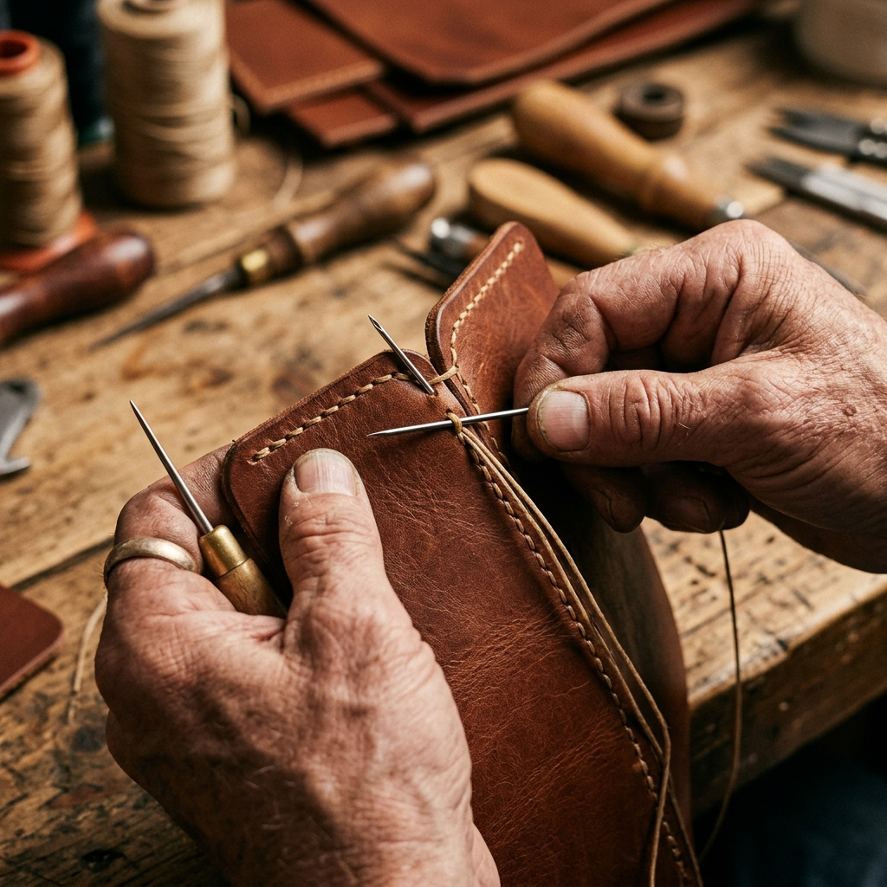
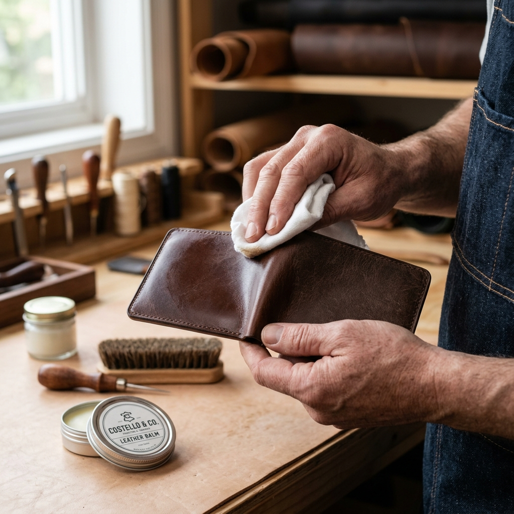
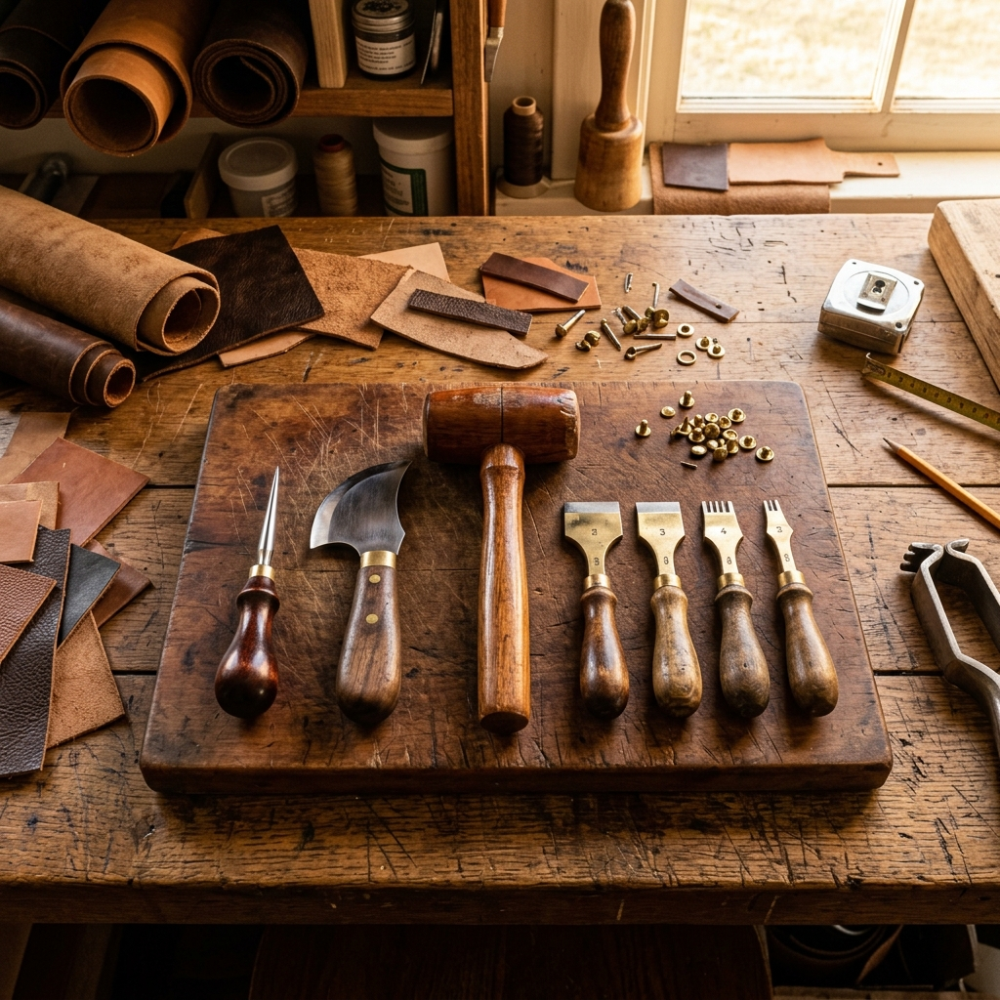
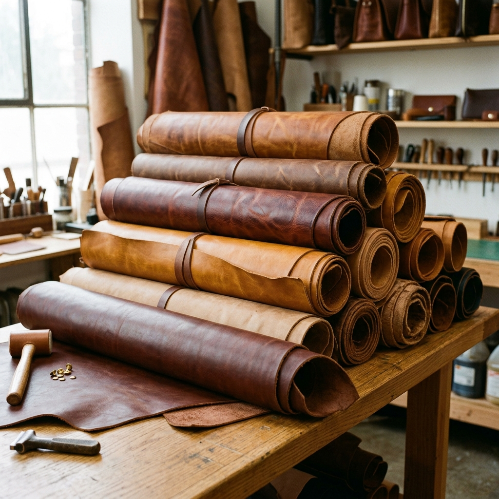
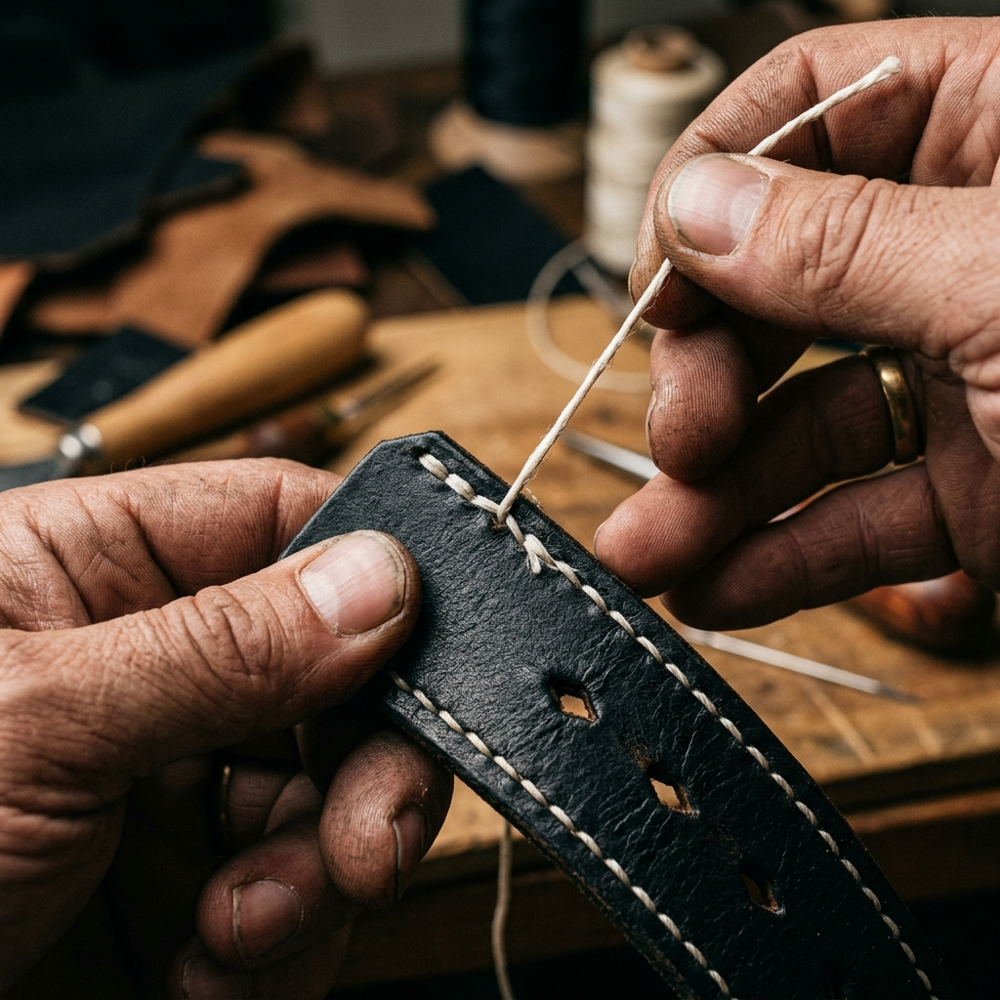
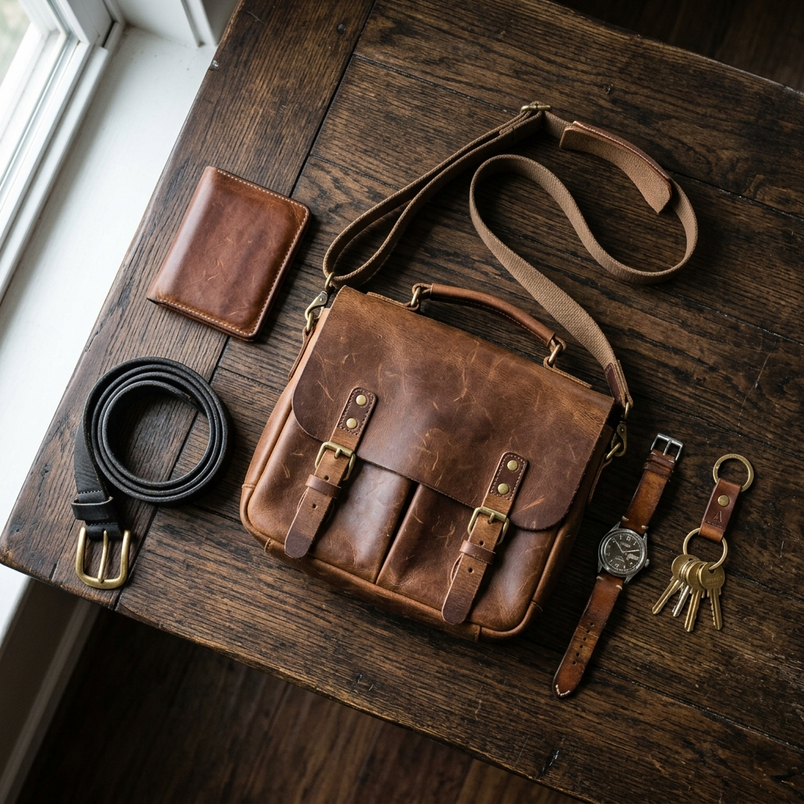

How to Condition Your Leather
Proper care is the secret to a long-lasting patina. Here's our guide to cleaning and conditioning.
Read More →Notes from the workshop, leather care guides, and the philosophy of making.

Why machine stitching will never replace the strength and durability of a hand-placed needle and thread. A deep dive into traditional techniques.

Proper care is the secret to a long-lasting patina. Here's our guide to cleaning and conditioning.
Read More →
A look at the knives, awls, and hammers that have built Heritage & Hide for the last decade.
Read More →
Why we choose vegen leather and the environmental impact of leather production.
Read More →How daily use transforms your leather into a unique record of your journey.
Read More →
The saddle stitch is stronger, more durable, and machine stitch ever made. Here's the science behind it.
Read More →
Not all leather is created equal.tanning methods, and what to look for when investing in a quality piece.
Read More →